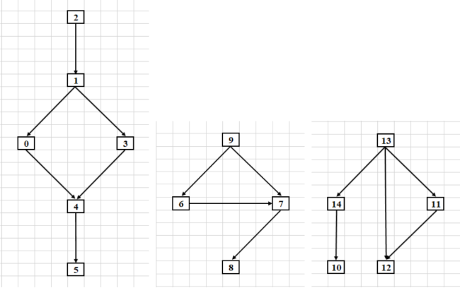

Продуктивності пристроїв (πᵢ для різних варіантів)
Граф системи функціональних пристроїв (ФП = 0)

1. Нехай πᵢ - реальні продуктивності, з якими працюють усi
функціональні пристрої кожної i-ї підсистеми,
i = 1, 2, 3.
ТОДІ:
Визначення завантаженості pᵢ, i = 1, ..., 5, i пристроїв першої підсистеми
Визначення завантаженості pᵢ, i = 6, ..., 9, i пристроїв другої підсистеми
Визначення завантаженості pᵢ, i = 10, ..., 13, i пристроїв третьої підсистеми
2. Визначення значення суми реальних продуктивностей підсистем:
r = r(1) + r(2) + r(3),
де r(i) — реальна продуктивність i-ї підсистеми, i = 1, 2, 3.
За першим законом Амдала, реальні продуктивності підсистем визначаються за формулою:
r(i) = lᵢ * π(i),
де lᵢ — кількість пристроїв i-ї підсистеми, i = 1, 2, 3.
Тому для системи, представленої на рисунку 1, маємо: